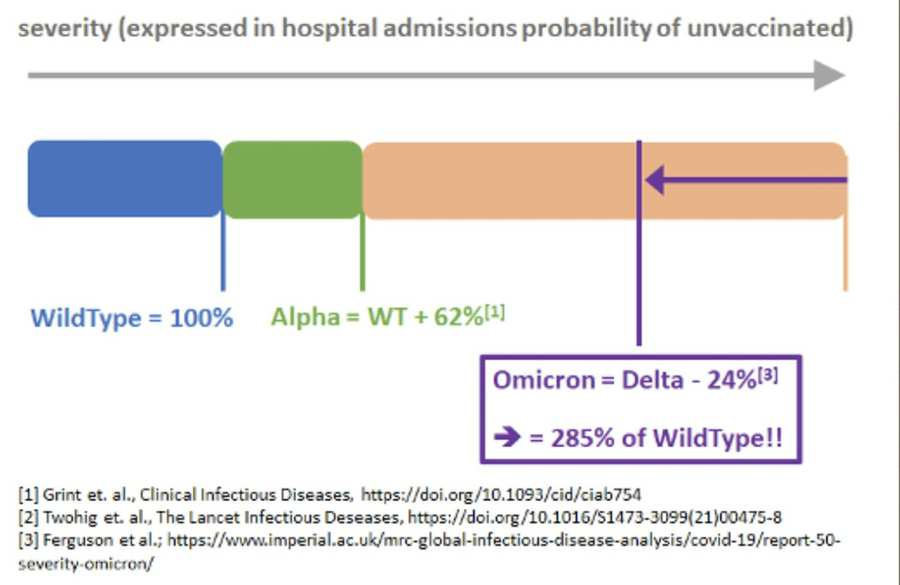

Corona Welt Pixabay
Univ. Prof. Dr. Arnold Pollak informiert über die jüngsten wissenschaftlichen Erkenntnisse rund um die Corona-Pandemie. Hier das Update vom 1.02.2022
Die neuesten Informationen der WHO-Region Europa: Überraschend positive Nachrichten
Der Direktor der WHO Europa Region, Dr. Kluge erklärt in einer Aussendung vorige Woche: Nach den schwierigsten Phasen der letzten zwei Jahre dürften wir in wenigen Monaten in eine Phase der Konsolidierung und Stabilisation eintreten. Es ist sicherlich noch zu früh um irgendwelche Maßnahmen der Prävention zu ändern. Aber aufgrund der beiden Komponenten Impfung und natürliche Immunität bringt Omikron doch eine gewisse Hoffnung für eine Normalisierung. Denn " Omikron scheint wesentlich weniger schwere Erkrankungen hervorzurufen als Delta, und wir sehen in ganz Europa zwar auch weniger Intensivbedarf , wenngleich der Anstieg an Infektionen und Hospitalisierungen enorm ist" (Anmerkung: in Österreich werden derzeit rund 1.400 Personen wegen Covid-19 im Krankenhaus behandelt). Wehmutstropfen und damit Unsicherheitsfaktor ist und bleibt die noch viel zu geringe Quote an vollständigen Impfungen um wirklich schon aufatmen zu können. Vergessen wir nicht die bisherige Bilanz in Europa: Am 24. Jänner 2020 wurde der erste Fall einer Corona-Infektion in Frankreich gemeldet. Seither sind 732 Tage der Pandemie vergangen mit 1,7 Millionen Corona-Toten ; das bedeutet 99 Tote jede Stunde! Mehr als 4 Millionen Menschen wurden in die Armut getrieben mit einem Einkommen von 5,5 USD pro Tag. 40% des medizinischen Personals auf Intensivstationen haben ein "posttraumatisches Stresssyndrom" erlitten! Dr.Kluge endet mit:" Die Pandemie wird vorbeigehen sowie andere Vorangegangene, aber heute ist es noch zu früh für eine vollkommene Entspannung denn neue Varianten werden kommen und auch wieder gehen: Nur wir haben viel besser gelernt damit umzugehen, sodassschwere wirtschaftliche, soziale und gesellschaftliche Folgen weitreichend vermieden werden können."
Die zweite Omikron Variante
Die Omikron-Variante von SARS-CoV-2 breitet sich weltweit immer weiter aus (S. Santhiraraja- Abresch et.al.). Inzwischen tauchen aber auch Berichte über die Omikron Subvariante BA.2 auf. In Indien gingen bereits zu Beginn des Jahres etwa 80 % aller positiven SARS-CoV-2-Tests auf diese Subvariante zurück. Die BA.2-Fallzahlen steigen aktuell nicht nur in Indien stark an, sondern auch insbesondere in Dänemark, Schweden und Großbritannien. In Dänemark soll BA.2 derzeit schon für knapp die Hälfte aller Corona-Infektionen verantwortlich sein.Sowohl BA.1 ("derzeitiges Omikron") als auch BA.2 weisen über 50 Mutationen auf. Bisher gibt es jedoch keine Daten, die bedeutende und funktionelle Unterschiede zwischen den Varianten aufzeigen.„Es liegt in der Natur von Viren, sich zu entwickeln und zu mutieren, daher ist zu erwarten, dass im Verlauf der Pandemie weiterhin neue Varianten auftauchen werden“, sagte Dr. Meera Chand, Leiterin für COVID-19-Fälle der oberten Britischen Gesundheitsbehörde (UKHSA). „Bisher gibt es keine ausreichenden Beweise, um festzustellen, ob BA.2 eine schwerere Krankheit verursacht als Omikron BA.1, aber die Datenlage ist begrenzt und die UKHSA untersucht weiter.“
Statement des CDC (Center of Disease Control in den USA) zum 3. Teil der Covid Impfung: Nun hat auch das CDC die israelischen Daten über die Bedeutung des dritten Teils der Impfung, die sogenannte Booster bestätigt. Obwohl nicht so wirksam gegen Omikron wie gegen Delta, ist es derzeit die einzige Waffe um schwere Erkrankungen und Spitalsaufnahmen zu verhindern. Bisher hat das CDC dazu noch keine Zahlen zur Verfügung gehabt. Seit einer Woche weiß man aus einem großen Datenpool der USA, dass Personen über 50 Jahre alt ein 45 mal größeres Risiko haben ins Spital eingeliefert zu werden, wenn sie nicht oder nur teilgeimpft sind.
Omikron-spezifischer Impfstoff entwickelt
Pfizer/BioNtech haben dieser Tage bekanntgegeben, dass noch im ersten Halbjahr 2022 ein neuer Omikron-spezifischer Impfstoff zur Verfügung stehen wird. Eine diesbezügliche Studie über Effektivität und Sicherheit wird 1.420 Personen beinhalten. Die Wirksamkeit dieses Impfstoffs gegen eine neue Variante ist deshalb von großer Bedeutung, weil damit die Grundlage für eine rasche Adaption der mRNA-Methodik zur Herstellung von spezifischen Impfstoffen gegen gefährliche neue Varianten gelegt wird.
Neuer Bluttest zur Vorhersage von COVID Patienten mit lebensgefährlichen Verlauf entwickelt
Eine deutsch-österreichische Forschergruppe hat einen Bluttest entwickelt mit dem vorausgesagt werden kann, bei welchen Patienten mit einem lebensbedrohlichen Verlauf ihrer Erkrankung gerechnet werden muss. Bei diesem Bluttest werden 14 verschiedene Eiweißkörper untersucht, die eine Voraussage des Verlaufes eines auf der Intensivstation liegenden COVID-Patienten ermöglicht. Der Test soll eine Genauigkeit von 96% haben. Damit soll es in Zukunft leichter sein, bei lebensbedrohlich gefährdeten Patienten wichtige Therapien auch rechtzeitig einzusetzen.
COVID-19: Die Einmal-Therapie Mit dem neuen Medikament
"ENSOVIBEP" wird die Firma Novartis ein neues Corona-antivirales Medikament auf den Markt bringen. Das Spannende an diesem Virostatikum ist, dass es nur einmal intravenös verabreicht wird. Davon können besonders Risikopatienten in ambulanter Behandlung extrem profitieren. Dieses Medikament gehört zu einer neuen Gruppe von so genannten Proteintherapeutika. Es handelt sich um künstlich hergestellte Proteine, die unterschiedliche Antigene erkennen und binden können; im Fall von SARS-COV2 dockt ENSOVIBEP an drei verschiedenen Stellen des Spikeproteins an. Dies dürfte eine besonders starke Neutralisierung der Erreger zur Folge haben. In einer ersten Studie wurde bei erkrankten Patienten die Hospitalisierung um 78 % gesenkt.
Univ. Prof. Dr. Arnold Pollak informiert über die jüngsten wissenschaftlichen Erkenntnisse rund um die Corona-Pandemie. Hier das Update vom 18.01.2022
Omikron: Die ersten wissenschaftlichen Daten:

Die ersten aussagekräftigen Daten zu Omikron sind für Personen, die dreifach geimpft sind, durchaus positiv. Drei Studien befassen sich mit der zellulären Immunität, die zumindest so wichtig ist wie die häufig zitierten Antikörper. Am aussagekräftigsten ist eine ganz aktuelle Studie aus den USA mit 51 Teilnehmern, die als Preprint erschienen ist: Die Autoren kommen zu dem Schluss, dass die aktuellen Impfstoffe einen erheblichen Schutz gegen eine schwere Erkrankung durch die SARS-COV-2-Omikron-Variante bieten können, obwohl die Zahl der Antikörper abgesunken waren und vermehrt Infektionen beobachtet wurden. Bei drei Impfungen ist der Schutz gegen Spitalseinweisung sogar nahe 90 Prozent! Nach zwei Impfungen liegt der Schutz bei 72 Prozent. Für Ungeimpfte ist Omikron eine Spur weniger gefährlich als die Delta-Variante, aber das Risiko einer Hospitalisierung ist nach Omikron-Infektion für Ungeimpfte fast drei Mal so hoch wie bei der ersten Corona-Variante. Zur Gefährlichkeit von Omikron dient die Veranschaulichung oben.
Häufig gestellte Fragen zu Impfungen
Der 4. Stich?
Mangels wissenschaftlicher Daten ist eine vierte Impfung derzeit nicht allgemein empfohlen. In Anbetracht der Omikron-Welle kann diese jedoch in Hochrisikobereichen (zum Beispiel Gesundheitspersonal) oder auch bei Hochrisiko-Personen nach ärztlicher Beratung und individueller Einschätzung sowie auf Wunsch der zu impfenden Personen erfolgen. Man muss aber bedenken, dass es zurzeit keine ausreichende wissenschaftliche Evidenz gibt, dass diese zusätzliche Impfung Infektionen vermeiden kann. Es ist jedoch davon auszugehen, dass damit sehr wohl schwere Erkrankungen und Spitalsaufnahmen vermieden werden können.
Impfung nach PCR bestätigter SARS-COV2-Infektion bei Genesenen
Personen, deren bestätigte Infektion nicht länger als sechs Monate zurückliegt und die eine erste Impfung bereits erhalten haben, sollen wie Personen mit zwei Impfungen angesehen werden. Eine weitere, dritte Impfung soll erst vier Monate nach Genesung verabreicht werden.
Liegt die mittels PCR-Test bestätigte Infektion sechs Monate oder länger zurück, so soll wie bei einer ungeimpften Person vorgegangen werden und innerhalb von vier Wochen nach Erkrankung eine Impfung erfolgen, um bestmöglich geschützt zu sein. Dies gilt auch für Personen bei denen der Zeitpunkt der Infektion gar nicht bekannt ist.
Versäumte Impfungen und abweichende Intervalle: Ein Unterschreiten des Intervalls von 14 Tagen ist nicht sinnvoll und wird nicht empfohlen. Wenn zwischen erster und zweiter Impfung ein Intervall von sechs Monaten überschritten wurde, so ist die zweite Impfung als erste Impfung anzusehen. Die dritte Impfung kann bei Personen ab 18 Jahren ab vier Monaten nach der zweiten Impfung durchgeführt werden. Ein Unterschreiten dieses Intervalls von 120 Tagen zwischen zweiter und dritter Impfung ist aus medizinischen Gründen nicht sinnvoll und kann daher auch nicht als dritte Impfung gewertet werden. Auch bei Kindern und Jugendlichen zwischen 12 und 17 Jahren kann angesichts der raschen Ausbreitung der Omikron-Variante in Ausnahmefällen die Impfung bereits nach vier Monaten und nicht wie sonst empfohlen erst sechs Monate nach der zweiten Impfung durchgeführt werden.

Immunität bei Kindern: Auch wenn Kinder und Jugendliche weniger schwer und seltener als Erwachsener an COVID erkranken, ist es nach größeren Studien circa 1 von 250 infizierten Kindern, welches eine Spitalsbehandlung benötigt. Ein vielleicht noch größeres Problem ist die mögliche Langzeitfolge der Infektion, das sogenannte Long Covid-Syndrom, mit länger andauernder Schwäche, Müdigkeit, Konzentrationsschwierigkeiten, Orientierungslosigkeit und anderen neurologischen Symptomen. Demgegenüber ist die Impfung bei Kindern millionenfach ohne wesentliche Nebenwirkung bereits durchgeführt worden und hat sich nicht nur als sicher sondern auch als sehr effektiver Schutz erwiesen. Dazu dient das Diagramm zum besseren Verständnis
Update vom 16.12.2021
Univ. Prof. Dr. Arnold Pollak fasst den aktuellen Stand der medizinischen Forschung in Bezug auf Corona für den IKG-Krisenstab zusammen. Aufgrund des großen Interesses werden die wichtigsten Erkenntnisse auch regelmäßig veröffentlicht. Heute geht es um die neue Omikron-Variante des Coronavirus:
Omikron: Impfung wirkt!
Die schlechte Nachricht vorweg: Die neue Variante ist extrem ansteckend. Daher breitet sich das Virus auch sehr schnell aus. Nun die guten Nachrichten: Personen, die dreifach geimpft sind, sind sehr gut vor schwerwiegender Erkrankung geschützt. Die derzeitige Studienlage zusammengefasst: Der Schutz gegen symptomatische Infektionen beträgt nach zwei Impfungen mit BioNtech/Pfizer zwar nur 34 bis 40 Prozent, der 3. Stich erhöht den Infektionsschutz jedoch auf 75 Prozent. Noch wichtiger: Der „Booster“ (3. Stich) erhöht den Schutz vor schwerwiegender Erkrankung auf 86,2 bis 98,2 Prozent. Eine Ansteckung ist also immer noch möglich, aber der Betroffene oder die Betroffene ist bestmöglich vor Hospitalisierung oder Schlimmerem geschützt. Sich den 3. Stich geben zu lassen, ist also das Beste, was Sie derzeit tun können, um sich vor Omikron zu schützen. Auch bei der neuen Variante schützen FFP2-Schutzmasken hochgradig vor Infektionen, wenn sie dicht anliegend getragen werden.
Bleiben Sie gesund!
Univ.Prof. Dr. Arnold Pollak,em. Vorstand der Universitätsklinik für Kinder- und Jugendheilkunde, AKH Wien
Update vom 7.12.2021
Heute liegt der Fokus auf der neuen Omikron-Variante. Dr. in Veronika Pollak-Wiedermann informiert in diesem Video über die Schutzimpfung für Mädchen und junge Frauen.
Weiters informiert der emeritierte Vorstand der Universitätsklinik für Kinder- und Jugendheilkunde (AKH Wien) über neue Studien und Zulassungen für die COVID-Schutzimpfung für Schwangere und Stillende sowie über die Frage, wie ansteckend geimpfte, ungeimpfte und genesene Menschen sind.